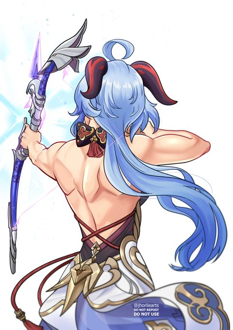

Home
Show 50 Tweets
Video games
·
See more
Video games
Gaming
Following this Topic will help personalize Home timeline and experience across Twitter

 comms open!
comms open!
Illustrator
 I
love my waif
I
love my waif DM for comms slot reservation
DM for comms slot reservation
 DON'T
REPOST MY ART! FIL/EN:
WLW here!
DON'T
REPOST MY ART! FIL/EN:
WLW here!
Ganyu would have been too powerful if she doesn't have any
sleeves.
 #原神 #GenshinImpact #Ganyu
#原神 #GenshinImpact #Ganyu
#原神 #GenshinImpact #Ganyu

125
7,465
50,1K

Take a moment to …

8,434
29,8K
352K

4,300
19K
266K
Won’t be long before we view gasoline cars the same way we
view steam engines today
8,434
29,8K
352K
Trends for you
Gaming · Trending
#GenshinImpact
244K Tweets
Trending in Ukraine
Донбасса
1,198 Tweets
Trending in Ukraine
ОДКБ
4,944 Tweets
Trending in Ukraine
Armed Forces of Ukraine
8,237 Tweets
Trending in Ukraine
В Крыму
12K Tweets
Trending in Ukraine
Скоро
6,715 Tweets
Trending in Ukraine
Херсона
2,264 Tweets
Trending in Ukraine
Китай
3,7K Tweets
Trending in Ukraine
Германии
2,756K Tweets
Who to follow

Adviser to the Head of the Office of President of Ukraine Volodymyr Zelenskyy / Official Telegram page: